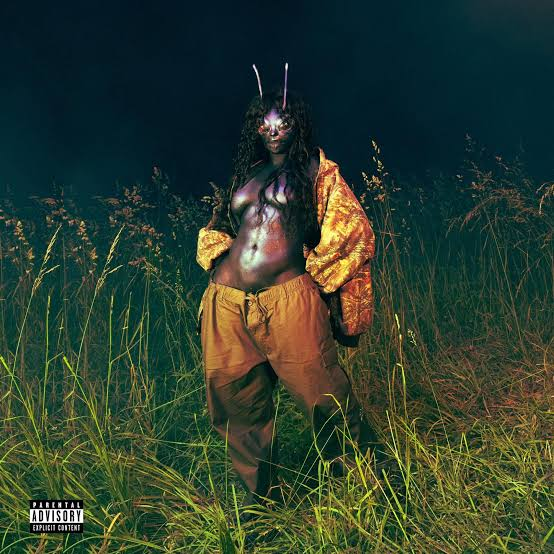

Válaszd ki a hangulatod, kattints rá, és megkapod hozzá a stílust, a hallgatási helyzeteket, és pár zenei javaslatot.

Nyisd le azt a kártyát, amelyik most a legjobban passzol hozzád.
Minden hangulathoz három előadó és előadónként öt szám tartozik.
Az előadó melletti ikonnal megnyílik a profilja Spotify-on.